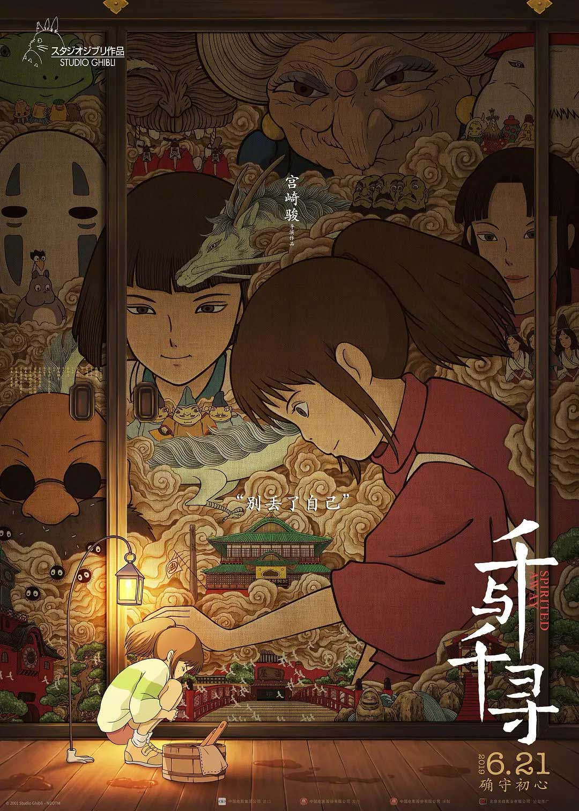

基本信息

- 中文名称
- 千与千寻、神隐少女（台湾）
- 原版名称
- 千と千尋の神隠し
- 其他名称
- Spirited Away（美国）
- 类型
- 剧情、动画、奇幻
- 制片地区
- 日本
- 对白语言
- 日语
- 片长
- 125分钟
- 等级
- PG级
- 出品年份
- 2001年
- 出品方
- 东宝映画
- 原作
- 宫崎骏
- 导演
- 宫崎骏
- 制片人
- 铃木敏夫
- 编剧
- 宫崎骏
- 主演
- 柊瑠美，入野自由，中村彰男，夏木真理
- 配乐
- 久石让
- 动画制作
- 吉卜力工作室
- 制作成本
- 19亿日元
- 影片发行
- 东宝株式会社
- 上映日期
- 2001年7月20日（日本）
- 票房
- 30058915500（日元）
- 254600000美元（海外）
- 主要奖项
- 第75届奥斯卡最佳动画长片奖
- 第52届柏林电影节金熊奖
剧情简介
小女孩千寻和父母一起在森林里迷了路，走过了一条神bai秘的隧道之后进入了一小镇。奇怪的是整个镇子一个人也没有。千寻的父母看到有一处店铺里存放着大量新鲜的食物，按奈不住诱惑便疯狂地吃了起来。千寻却感觉这里令她很不安，看到父母只顾着吃，她只得自己到别处转悠转悠。
天色渐暗，千寻忽然看到镇子里有很多幽灵和妖怪出现，吓得赶紧去找她的父母，一到父母身边更令她吃惊的是他们都已经变成了猪。无助的千寻只能逃跑，而此时她的身体正在慢慢消失。幸好途中遇到少年白龙，白龙告诉千寻这里是神灵之镇，只接待各路的妖怪神仙，人类是不能进来的，如果不幸进来的话，唯一能生存的办法就是要在这里工作，并且要得到魔女“汤婆婆”的允许。
千寻好不容易才让恐怖的汤婆婆答应给她工作，但是按照惯例被汤婆婆用魔法剥夺了名字，成为小镇里的一员，名为“千”。在千寻工作期间，因为她天真善良的个性而结交了铃、无脸男等朋友，他们都帮助过千寻度过难关。
一天，千寻撞见一条受了重伤的小白龙，并发现它其实是少年白龙的化身。因为他受汤婆婆的指使，偷了汤婆婆的死对头兼孪生姐姐钱婆婆的宝物而遭钱婆婆追杀。钱婆婆为此还一气之下把汤婆婆宠爱的孩子变成了小白鼠。为了救白龙，千寻答应帮汤婆婆救回儿子，并要求汤婆婆把她的父母变回人类。汤婆婆答应后，千寻便拿着白龙偷来的宝物去找钱婆婆，并归还了宝物，白龙也向钱婆婆道了歉。实际上钱婆婆也远不像别人想象中那么可怕，反倒是个通情达理的老太太，所以一切都很顺利。
最后，汤婆婆终于放他们父女三人终于离开了小镇。千寻的父母还不知道到底发生了些什么事情，全然忘了小镇的事情，而千寻却还若有所思地回过头去，看看身后，回想着不久前那些惊险离奇的事情。